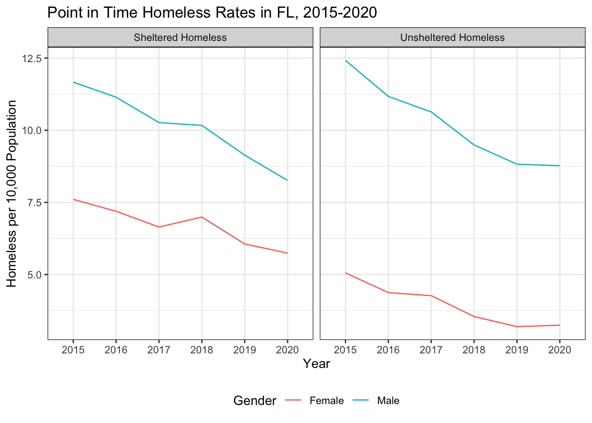

library(tidyverse)
pit <- read_csv("https://raw.githubusercontent.com/sds-192-intro-fall22/sds-192-public-website-quarto/main/website/data/pit_2015_2020.csv")
#Note for future reference how adding the following could remove unreliable counts:
# mutate_at(vars(2:97), funs(case_when(. < 20 ~ as.numeric(NA), TRUE ~ .)))
gender <- read_csv("https://raw.githubusercontent.com/sds-192-intro-fall22/sds-192-public-website-quarto/main/website/data/gender_state_2015_2020.csv")
race <- read_csv("https://raw.githubusercontent.com/sds-192-intro-fall22/sds-192-public-website-quarto/main/website/data/race_state_2015_2020.csv")Lab 7: Tidying Data
Introduction
In this lab, we will create a few data visualizations documenting point-in-time counts of homelessness in the United States. Specifically, we are going visualize data collected in 2020 through various Continuums of Care (CoCs) programs. In order to produce these data visualizations, you will need to join homelessness data with census population data and develop and execute a plan for how to wrangle the dataset into a “tidy” format.
Learning Goals
- Recognize the differences between tidy and non-tidy data
- Pivot datasets both longer and wider
- Separate and unite columns
- Consider the ethical implications of analyzing homeless counts
Review of Key Terms
Tip
You may wish to reference this Tidy R Cheatsheet when completing this lab.
- Tidy data
-
A rectangular data table in which every row is an observation and every column is a variable describing something about that observation
- Pivoting
-
Rotating data columns so that they are presented as rows or rotating data rows so that they are presented as columns
HUD’s Point-in Time Counts
The U.S. Department of Housing and Urban Development is responsible for monitoring and addressing housing affordability and homelessness throughout the country. One initiative that they oversee towards this end is the Continuum of Care Program. Continuums of Care (CoCs) are local planning organizations responsible for allocating resources and coordinating services to address homelessness in the United States. Every state has a number of CoCs that report to the Department of Housing and Urban Development.
Every year, on a single night in the last 10 days of January, CoCs required to conduct a “point-in-time” count of sheltered and unsheltered homeless individuals. To generate the sheltered point-in-time count, CoCs coordinate with transitional housing centers or emergency shelters to record the number of people housed in that location on the selected night. There are a few different approaches to generating an unsheltered point-in-time count:
“Night of” street count: Volunteers are sent out to canvass either the entire geography of a random sample of areas in a CoC. While canvassing, they are expected to record the number of people they see currently residing in spaces not designed for sleeping accommodations.
Service-based count: In the 7 days following the night of the designated PIT count, volunteers are dispatched to food kitchens, shelters, libraries and other services identified as spaces that unhoused individuals frequent. There, they are expected to survey individuals to determine if they were sheltered on the night of the count.
Following the night of the count, the collected data points are shipped off to HUD where they are aggregated into the dataset we will be working with today.
There are a number of limitations to this approach of estimating homelessness, which I encourage you to consider throughout this analysis and when responding to our Ethical Considerations question.
Setting Up Your Environment
- Run the code below to load today’s data frames into your environment.
Our Goal
Today’s goal is to produce just two plots:
- A timeseries of rates of both sheltered and unsheltered homelessness by gender for a given state.
- A timeseries of rates of both sheltered and unsheltered homelessness by race for a given state.
The first plot will look like this:
…and the second plot will look like this.
To be able to produce these plots, we are going to have to do considerable amount of data wrangling and cleaning. This lab will walk you through those steps.
Data Cleaning
First, let’s consider each of our data frames. You have pit, which documents homelessness counts from 2015 to 2020 in each state along a number of categories (such as gender, race, sheltered vs. unsheltered, etc.). Note how in this data frame each row is a state, and each variable is a count associated with a particular category.
head(pit)This is an example of untidy data. The reason is that there is data we want to visualize (such as race, gender, year, and sheltered vs. unsheltered) that are stored in our column headers, not in cells of the data frame. To be able to visualize this data by race, by gender, or by year we need to pivot our data frames so that the values stored in column headers instead get restored in data cells.
Question
Write code to pivot longer columns 2 through 97 (i.e. all columns except the first state column) in pit. Store the names in column called “Measure” and store the values in a column called “Value.” Store the resulting data frame in in pit_pivoted.
# Uncomment below and write code to pivot dataset. Store the results in pit_pivoted
# pit_pivoted <- pit |> pivot_longer(_____)If you’ve done this correctly the first six rows of the resulting data frame should look like this.
head(pit_pivoted)Now you’ll notice that that we have some more cleaning to do because many separate variables are all stored in the Measure column. We have: the year, the demographic, whether the count is for Sheltered or Unsheltered individuals all stored in the column. We need to separate all of these distinct variables into different columns. We’re going to do this in a few steps.
Question
Write code to separate Measure into two columns. One column should be called Shel_Unshel, and the second should be called Demographic. Note what symbol separates these two pieces of data: space dash space (i.e. ” - “). You will need to specify this in the sep argument for separate(). Store the resulting data frame in in pit_separate_1.
# Uncomment below and complete the code to separate the Measure column. Store the results in pit_separate_1
# pit_separate_1 <- pit_pivoted |> separate(_____)If you’ve done this correctly the first six rows of the resulting data frame should look like this.
head(pit_separate_1)We still have some cleaning to do because we have demographic data and year data are stored in the same column.
Question
Write code to separate Demographic into two columns. One column should be called Demographic, and the second should be called Year. Note what symbol separates these two pieces of data: comma space (i.e. “,”). You will need to specify this in the sep argument for separate(). Store the resulting data frame in in pit_separate_2.
# Uncomment below and complete the code to separate the Demographic column. Store the results in pit_separate_2
# pit_separate_2 <- pit_separate_1 |> separate(_____)If you’ve done this correctly the first six rows of the resulting data frame should look like this.
head(pit_separate_2)As a final cleaning step, let’s remove some unnecessary characters from the Shel_Unshel column. Specifically, let’s remove the string “Total” since we already know that these represent Total counts for these categories.
Question
Remove the string “Total” from the Shel_Unshel column. To do this you should use the str_replace() function. Replace the string “Total” with the empty string (i.e. ““) to remove these characters. Store the results in pit_str_cleaned.
# Uncomment below and complete the code to replace the string "Total " in Shel_Unshel with an empty string. Store the results in pit_str_cleaned
# pit_str_cleaned <- pit_separate_2 |> mutate(Shel_Unshel = _______)If you’ve done this correctly the first six rows of the resulting data frame should look like this.
head(pit_str_cleaned)The next issue is that there are multiple kinds of demographics in the demographic column. Specifically, we have both race represented in that column and gender represented in that column. Remember the rules of tidy data, according to Wickham (2014):
- Each variable forms a column.
- Each observation forms a row.
- Each type of observational unit forms a table.
This issue violates the third rule. In one table, we have two observational units - a count of unhoused individuals by race and a count of unhoused individuals by gender. To clean this up, we need to separate this into different tables.
Question
Create two new data frames - one for pit_by_gender and one for pit_by_race. To do this you want to extract the rows with values in Demographic %in% the following vector of values: c("Female", "Male", "Transgender"), and store the result in pit_by_gender. Then you want to extract the rows with values in Demographic %in% the following vector of values:
c("Black or African American",
"Asian",
"American Indian or Alaska Native",
"Native Hawaiian or Other Pacific Islander",
"White",
"Multiple Races")and store the result in pit_by_race.
# Uncomment below to create two new tables.
# pit_by_gender <- pit_str_cleaned |>
# pit_by_race <- pit_str_cleaned |>If you’ve done this correctly the first six rows of the resulting data frame should look like this.
head(pit_by_gender)head(pit_by_race)Now we have two significantly cleaned data tables. Let’s go ahead and remove some of the data frames we no longer need from our environmennt.
rm(pit, pit_pivoted, pit_separate_1, pit_separate_2, pit_str_cleaned)With the final data, we could visualize counts of homelessness per state using each of these tables. Check out the plot below to see an example of what this might look like.
The problem now is that we don’t know if higher counts are a result of greater homelessness for that sub-group or a result of there being higher populations of that sub-group in each state. For instance, in the plot above, is the count of homelessness higher for unsheltered white individuals because white individuals are more likely to be homeless or because there is a higher population of white individuals in Florida? We ultimately want to consider the rates of homelessness per x number of people of that demographic in that state. To do that, we’re going to need to join this dataset with some census data documenting population.
I’ve supplied you with two census tables:
gender: documents population estimates and margin of error (moe) for each gender in each state from 2015-2020
head(gender)race: documents population estimates and margin of error (moe) for each race in each state from 2015-2020
head(race)Note that in these two data frames - just like above - we have values stored in our column headers, and we need to pivot our data longer and then clean it up. We’re going to complete this in three parts.
Question
Create two new tidy data frames - gender_final and race_final. For each, you should do this in 3 steps:
Step 1: Pivot the columns estimate_2015:moe_2020 longer, storing the column names in “Measure” and the values in “Values”. Step 2: Separate the values in Measure into two columns: “Measure”, “Year”. Note that these are separated by an underscore (“_“). Step 3: Pivot the Measure column wider, taking the values from the Values column.
# Fill in the blanks to clean up these data frames.
# Step 1
#gender_pivoted_longer <- gender |> pivot_longer(_____)
# Step 2
#gender_separated <- gender_pivoted |> separate(_____)
# Step 3
#gender_final <- gender_separated |> pivot_wider(_____)
# Step 1
#race_pivoted_longer <- race |> pivot_longer(_____)
# Step 2
#race_separated <- race_pivoted |> separate(_____)
# Step 3
#race_final <- race_separated |> pivot_wider(_____)If you’ve done this correctly the first six rows of the resulting data frame should look like this.
head(gender_final)head(gender_final)Now that we have cleaned up census data, let’s go ahead and remove some data frames that we no longer need in our environments
rm(gender, gender_pivoted_longer, gender_separated, race, race_pivoted_longer, race_separated)Our next step is to join the census data with our point-in-time count data tables. Let’s just compare pit_by_gender to gender_final to discern the join key.
head(pit_by_gender)head(gender_final)Notice that here, we need to join on three variables: the state, the year, and the demographic. …but you might have noticed a problem. In our census data table, states are written out, and in our point-in-time data table, states are abbreviated. The values need to match for the join to work, so we will need to create a new column with the full state name in our point-in-time count data table. I’ve written the code to do this below. You should run that code before moving on to the next step.
pit_by_gender <-
pit_by_gender |>
mutate(StateName = state.name[match(State, state.abb)])
pit_by_race <-
pit_by_race |>
mutate(StateName = state.name[match(State, state.abb)])Now our data frames are formatted in such a way that we can join pit_by_gender to gender_final and pit_by_race to race_final.
Question
Join pit_by_gender on the left to gender_final on the right and store the results in pit_gender. Join pit_by_race on the left to race_final on the right and store the results in pit_race. In both case, you will be joining by three variables: State, Demographic, and Year. We can set the left key variables to the right key variables by setting the by argument to this in the join: c("StateName" = "NAME", "Demographic" = "variable", "Year" = "Year")
# Uncomment below and write code to join pit_by_gender to gender_final and pit_by_race to race_final. Store the results in pit_gender and pit_race respectively.
# pit_gender <- pit_by_gender |>
# pit_race <- pit_by_race |>If you’ve done this correctly the first six rows of the resulting data frames should look like this.
head(pit_gender)head(pit_race)One final step before we can create our plots! We need to create a new column that calculates the rate of homelessness for this sub-group per 10,000 population of that sub-group in that state and year. You have all of the pieces you need to do this now.
Question
Use a data wrangling verb to create a new column in both pit_gender and pit_race that calculates the rate of homelessness per 10,000 population. Set that column name to homeless_rate. Hint: When creating that column, you’ll need to divide the homeless count by the population estimate and then multiply by 10000. Store the resulting data frames in
# Uncomment below and write code to create a new column for homelessness_rate in both pit_gender and pit_race
# pit_gender_rates <- pit_gender |>
# pit_race_rates <- pit_race |>If you’ve done this correctly the first six rows of the resulting data frames should look like this.
head(pit_gender_rates)head(pit_race_rates)If you’ve done everything correctly, you should be able to run the following code to generate the plots presented at the beginning of the lab. Feel free to swap out the State filter for different states to see how the rates compare across the US.
options(scipen=999)
pit_gender_rates |>
filter(State == "FL") |>
ggplot(aes(x = Year,
y = homeless_rate,
col = Demographic,
group = Demographic)) +
geom_line() +
facet_wrap(vars(Shel_Unshel)) +
theme_bw() +
theme(legend.position = "bottom") +
labs(title = "Point in Time Homeless Rates in FL, 2015-2020",
x = "Year",
y = "Homeless per 10,000 Population",
col = "Gender")
pit_race_rates |>
filter(State == "FL") |>
ggplot(aes(x = Year,
y = homeless_rate,
col = Demographic,
group = Demographic)) +
geom_line() +
facet_wrap(vars(Shel_Unshel)) +
theme_bw() +
theme(legend.position = "bottom") +
guides(color = guide_legend(nrow = 3, byrow = TRUE)) +
labs(title = "Point in Time Homeless Rates in FL, 2015-2020",
x = "Year",
y = "Homeless per 10,000 Population",
col = "Race")
Ethical Considerations
While this is one of the primary datasets used to direct resources for homelessness in the U.S., there are a number of reasons unhoused individual may go uncounted through point-in-time counts:
- Only individuals that are visible to enumerators get counted. However, other sources (such as surveys in public schools) have shown that the majority of unhoused individuals are not on the streets or in shelters, but instead are temporarily residing with family/friends or are in staying in motels.
- As living on the streets is increasingly criminalized in cities across the U.S., there are reasons why unhoused individuals may try to avoid being seen on a given night.
- Only recently have counting protocols started to include separate categories for Transgender and Gender Non-Conforming individuals. When counting PIT data against census population data, however, these sub-groups won’t appear because the census only collects Sex as “Male” and “Female”.
- Different CoCs use different methods to generate PIT counts.
For more information see e National Law Center on Homelessness & Poverty (2017).
Taking into consideration all of these factors, how should we, as data scientists, think about and present this data? Is there value in PIT count data? How should we go about communicating its shortcomings? How might we go about collecting this data in different ways? Share your ideas on our sds-192-discussions Slack channel.
References
e National Law Center on Homelessness & Poverty. 2017. “Don’t Count on It: How the HUD Point-in-Time Count Underestimates the Homelessness Crisis in America.” https://homelesslaw.org/wp-content/uploads/2018/10/HUD-PIT-report2017.pdf.
Wickham, Hadley. 2014. “Tidy Data.” Journal of Statistical Software 59 (September): 1–23. https://doi.org/10.18637/jss.v059.i10.